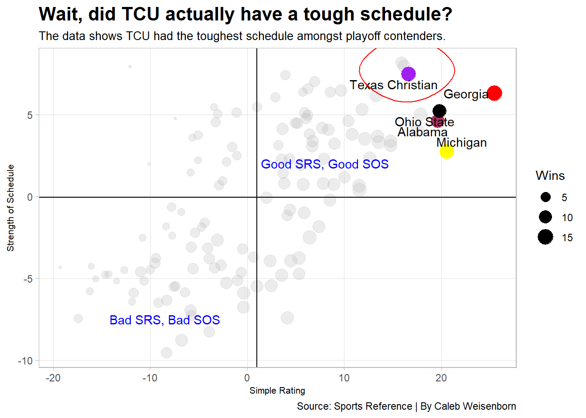

Code
library(tidyverse)
library(ggbump)
library(ggrepel)
library(cowplot)
library(ggalt)
library(cowplot)
games <- read_csv("data/footballlogs22.csv")The 2023 College Football Championship was an absolute blood bath. The TCU Horned Frogs came into the game with a record of 13-2 after a back and forth battle with the Michigan Wolverines. The Georgia Bulldogs were a perfect 14-0 after squeezing out a victory vs the Ohio State Buckeyes on a last second missed field goal.
Fans around the country settled in to their living rooms to watch the big game on January 9, 2023. TCU came out and punched first, but after that it was all Georgia. The Bulldogs scored 65 unanswered points on there way to become 2023 National Champions. Many wondered if TCU should have even been in the playoff in the first place over a team such as Alabama. Was Georgia just that good, or was TCU overrated?
There’s a well-known narrative that the Southeastern Conference(SEC), the conference Georgia plays in, is a dominant conference in college football. They consistently have high ranked teams and usually a team from the SEC is in the championship. On the other hand, the Big 12, the conference TCU plays in, is known for it’s high scoring games and explosive offenses. Let’s take a look at look at where the Big 12 stands offensively and defensively.
library(tidyverse)
library(ggbump)
library(ggrepel)
library(cowplot)
library(ggalt)
library(cowplot)
games <- read_csv("data/footballlogs22.csv")totals <- games %>%
group_by(Conference) %>%
summarize(
TotalOffYds = sum(OffensiveYards),
TotalDefYds = sum(DefYards),
TotalOffAvg = mean(OffensiveYards),
TotalDefAvg = mean(DefYards
)) %>%
mutate(
OffenseAvg = TotalOffAvg ,
DefenseAvg = TotalDefAvg
)
topoffense <- totals %>% top_n(5,wt=OffenseAvg)
topdefense <- totals %>% top_n(5,wt=DefenseAvg)
bar1 <- ggplot() +
geom_bar(data=topoffense, aes(x=reorder(Conference, OffenseAvg), weight=OffenseAvg)) +
coord_flip()
bar2 <- ggplot() +
geom_bar(data=topdefense, aes(x=reorder(Conference, DefenseAvg), weight=DefenseAvg)) +
coord_flip()
big12 <- totals %>% filter(Conference == "Big 12 Conference")
bar1 <- ggplot() +
geom_bar(data=topoffense, aes(x=reorder(Conference, OffenseAvg), weight=OffenseAvg), fill="grey") +
geom_bar(data=big12, aes(x=reorder(Conference, OffenseAvg), weight=OffenseAvg), fill="purple") +
coord_flip() +
labs(title="Top 5 conferences in offensive and defensive yards per game.", subtitle = "The Big 12 gains the 2nd most yards per game and allows the 3rd most.", x="", y="Offensive Yards Per Game", caption = "") +
theme_minimal() +
theme(
plot.title = element_text(size = 16, face = "bold"),
axis.title = element_text(size = 8),
plot.subtitle = element_text(size=10),
panel.grid.minor = element_blank(),
plot.title.position = "plot"
)
bar2 <- ggplot() +
geom_bar(data=topdefense, aes(x=reorder(Conference, DefenseAvg), weight=DefenseAvg), fill="grey") +
geom_bar(data=big12, aes(x=reorder(Conference, DefenseAvg), weight=DefenseAvg), fill="purple") +
coord_flip() +
labs(title = "", subtitle= "", x="", y="Defensive Yards Per Game", caption="Source: NCAA | By Caleb Weisenborn") +
theme_minimal() +
theme(
plot.title = element_text(size = 16, face = "bold"),
axis.title = element_text(size = 8),
plot.subtitle = element_text(size=10),
panel.grid.minor = element_blank(),
plot.title.position = "plot"
)
plot_grid(bar1, bar2, ncol=1)ggsave("image.png")Saving 7 x 5 in imageAs you can see, defense in the Big 12 sort of relates to Iowa and winning championships. It’s nonexistent. Teams in the Big 12 on average allow 402 yards per game and offenses average around 427 yards. The SEC offenses come in just behind the Big 12 at about 423 yards per game, but the defensive averages don’t even crack the top 5. This means that defenses in the SEC are tougher, but the offenses still find success, on average.
Although, an argument can be made here. Does the amount of yards a team gives up or gains per game necessarily equate to how bad or good they are? Yes and no.
You could hypothetically give up 1000 yards per game and go undefeated. If you can score more points than the other team, you win. Where the problem lies is the quality of opponents you are playing. I could grab 11 random dudes and average 500 yards a game by myself if we were playing against toddlers.
Thankfully, Sports Reference calculates a number called SRS, or Simple Rating Score. SRS takes into account a teams strength of schedule and point differential. The key here is it is not just point differential in wins. So, teams gain SRS points by playing tough opponents and either winning, or losing. The closer the game in a loss vs a tough opponent, the more SRS points a team would receive. The more points a team wins by, the more SRS points a team would receive, especially if it is a tough opponent.
morecfb <- read_csv("data/more_cfb_data2.csv")tcu <- morecfb %>% filter(School == "Texas Christian")
ga <- morecfb %>% filter(School == "Georgia")
bama <- morecfb %>% filter(School == "Alabama")
mi <- morecfb %>% filter(School == "Michigan")
osu <- morecfb %>% filter(School == "Ohio State")
ggplot() +
geom_point(
data=morecfb,
aes(x=SRS, y=SOS, size=TotalW),
color="grey",
alpha=.3) +
geom_point(
data=tcu,
aes(x=SRS, y=SOS, size=TotalW),
color="purple") +
geom_point(
data=ga,
aes(x=SRS, y=SOS, size=TotalW),
color="red") +
geom_point(
data=bama,
aes(x=SRS, y=SOS, size=TotalW),
color="maroon") +
geom_point(
data=mi,
aes(x=SRS, y=SOS, size=TotalW),
color="yellow") +
geom_point(
data=osu,
aes(x=SRS, y=SOS, size=TotalW),
color="black") +
geom_vline(xintercept = 0.9877863) +
geom_hline(yintercept =-0.05610687) +
geom_text(aes(x=8, y=2, label="Good SRS, Good SOS"), color="blue") +
geom_text(aes(x=-8.5, y=-7.5, label="Bad SRS, Bad SOS"), color="blue") +
geom_text_repel(data=tcu, aes(x=SRS, y=SOS, label=School)) +
geom_text_repel(data=ga, aes(x=SRS, y=SOS, label=School)) +
geom_text_repel(data=bama, aes(x=SRS, y=SOS, label=School)) +
geom_text_repel(data=mi, aes(x=SRS, y=SOS, label=School)) +
geom_text_repel(data=osu, aes(x=SRS, y=SOS, label=School)) +
geom_encircle(data=tcu, aes(x=SRS-0.2, y=SOS+.25), s_shape=.01, expand=.0000000001, colour="red") +
labs(
x="Simple Rating",
y="Strength of Schedule",
title="Wait, did TCU actually have a tough schedule?",
subtitle="The data shows TCU had the toughest schedule amongst playoff contenders.",
caption="Source: Sports Reference | By Caleb Weisenborn",
size="Wins"
) +
theme_light() +
theme(
plot.title = element_text(size = 16, face = "bold"),
axis.title = element_text(size = 8),
plot.subtitle = element_text(size = 10),
panel.grid.minor = element_blank()
)
Alright, wait a minute. Of the teams in contention in the playoffs, TCU had the toughest schedule? What we must remember is that data is a phenomenal tool, but it doesn’t always tell a complete story and things can be flawed. The data doesn’t tell us that TCU played against both Georgia and Michigan. These two teams not only had the highest SRS between the playoff contending teams, but the highest SRS in the country. Georgia finished the season at a 25.48 SRS, 5 SRS points than Michigan who finished at 20.59. This drastically increases the SOS numbers for TCU.
Although, TCU had the “toughest” schedule of playoff teams, they had the lowest SRS. This means that other teams had a much better point differential than TCU. This begs the question of, how close were TCU games compared to other teams?
difflogs <- games %>%
mutate(Differential = TeamScore - OpponentScore) %>%
group_by(Team) %>%
mutate(CumDiff = cumsum(Differential))
tcu <- difflogs %>% filter(Team == "Texas Christian")
mi <- difflogs %>% filter(Team == "Michigan")
ga <- difflogs %>% filter(Team == "Georgia")
bama <- difflogs %>% filter(Team == "Alabama")
osu <- difflogs %>% filter(Team == "Ohio State")ggplot() +
geom_step(data=tcu, aes(x=Date, y=CumDiff, group=Team), color="purple") +
geom_step(data=mi, aes(x=Date, y=CumDiff, group=Team), color="yellow") +
geom_step(data=ga, aes(x=Date, y=CumDiff, group=Team), color="red") +
geom_step(data=bama, aes(x=Date, y=CumDiff, group=Team), color="maroon") +
geom_step(data=osu, aes(x=Date, y=CumDiff, group=Team), color="black") +
annotate("text", x=(as.Date("2023-01-09")), y=335, label="Georgia") +
annotate("text", x=(as.Date("2023-01-09")), y=125, label="TCU") +
annotate("text", x=(as.Date("2022-12-15")), y=320, label="Ohio State") +
annotate("text", x=(as.Date("2022-12-15")), y=250, label="Alabama") +
annotate("text", x=(as.Date("2022-12-15")), y=365, label="Michigan") +
labs(
x="Date",
y="Cumulative Point Differential",
title="Playoff Teams and Alabama Score Differential ",
subtitle="Across whole season",
caption="Source: Sports-Reference.com | By Caleb Weisenborn"
) +
theme_minimal()
The difference really isn’t even close, and it was consistent all season. TCU finished with 13 wins, but the majority of them were within one touchdown or less. If you watched any of their games this year, you would know they had multiple second half and even late 4th quarter comebacks.
Earlier, we determined that the defenses in the Big 12 weren’t exactly powerhouses. Big 12 defenses give up around 402 yards per game. I mean, the most yards ever given up in a college football game was between two Big 12 teams, Texas Tech and Oklahoma. Patrick Mahomes and Baker Mayfield led their teams in a 66-59 shootout, where both teams combined for 1708 yards. TCU was used to this style of defense, and got popped in the mouth on the biggest stage.
The numbers indicate that Alabama should have gotten the bid over TCU. They played a similarly difficult schedule, and Alabama had a higher point differential. Let’s put it this way, TCU played against Kansas State twice this season, ok? TCU won both games. In the first one, TCU was down 28-10 early in the second half, and ended up winning 38-28. The second match, TCU won in overtime after being down 8 with 2:30 left in the game. Alabama beat Kansas State in the Sugar Bowl 45-20.
TCU was a Cinderella story that didn’t have a fairytale ending. Max Duggan, the quarterback, was a kid from Iowa who I have personally been watching since high school, so it was incredible to see him in the moment. Everyone is sick of Nick Saban and the Crimson Tide in the National Championship, but the truth is they deserved it, and we might have been actually able to enjoy the biggest game of the college football season.